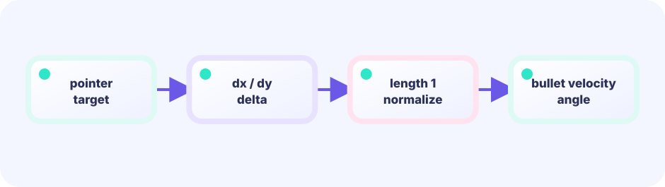
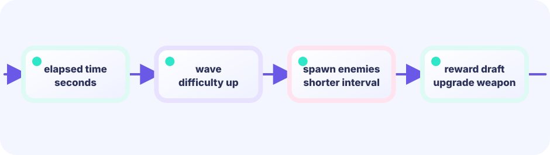

Nearest-neighbor search
One click advances to the next shot. Every shot locks the nearest enemy (B has the smallest distance).
if d < dist { best = i }★★☆☆☆ / PLAYABLE
The player only moves. A turret fires every 28 frames toward the nearest enemy automatically. Defeat 30 enemies to clear.
On screen you see original hero Ebi Tenjiroh; hits still use simple shapes. Movement math still lives in the same LEVEL 01 state boundary.
PLAYABLE / WEBASSEMBLY
WASD, arrow keys, or drag. The turret auto-aims the closest enemy every 28 frames.
FIRST-TIME READER
Find where this one line is used, then follow how its value changes on screen. This is the shared game-state boundary: add rules in Update, then choose an independent presentation in Draw. The numbered steps below add one system at a time.
ONE RULE TO TRACE
Match the explanation to this line, then test the change in the game.
target:=nearestEnemy(); if cooldown==0 { fire(target) }

DEEP DIVE / AUTO AIMING
Compare the distance to every enemy one by one and remember the smallest. That linear scan is a nearest-neighbor search. Once the closest target is found, normalize the direction vector and multiply by shot speed. That is all auto-aiming is. Start bestDist at math.MaxFloat64 (a huge number) and shrink it when a closer foe appears. Divide by dist to normalize, then ×7. Guard dist≈0 before dividing.
One click advances to the next shot. Every shot locks the nearest enemy (B has the smallest distance).
if d < dist { best = i }Firing every tick would be too rapid. Use frame%28==0 to fire exactly once every 28 frames. Changing the divisor directly controls fire rate.
if g.frame%28 == 0Subtract player position from enemy position, divide by the already-computed distance, then multiply by shot speed. The result is a normalized direction scaled to the right magnitude.
vx = (e.x - g.px) / dist * 7TRY IT / AIM + COOLDOWN
Each tick pick the nearest foe; fire only when the cooldown hits zero.
The real game measures distance every tick and appends a bullet every 28 frames. This lab uses 8 ticks so you feel it.
TRY IT · GO
best, dist := nearestEnemy(enemies, px, py) if frame%cooldown == 0 { fire(best) } shots = append(shots, toward(best))
—
THE TARGETING RULE
best, dist := 0, math.MaxFloat64loop all enemies, then firevx = (e.x - g.px) / dist * 7Starting from math.MaxFloat64 and updating on each smaller value is the classic minimum-finding pattern. The same dist variable computed during the search is reused as the divisor when building the shot velocity.
IN THE REAL GAME
Every 28 frames, run the nearest-neighbor loop and append a new shot body whose velocity points at the best enemy. Each tick every shot advances by its velocity; shots that leave the screen or hit an enemy are removed from the slice.
if g.frame%28 == 0 && len(g.enemies) > 0 {
best, dist := 0, math.MaxFloat64
for i, e := range g.enemies {
d := math.Hypot(e.x-g.px, e.y-g.py)
if d < dist { best, dist = i, d }
}
e := g.enemies[best]
g.shots = append(g.shots, body{
g.px, g.py,
if dist < 1 { dist = 1 }
(e.x - g.px) / dist * 7,
(e.y - g.py) / dist * 7, 5,
})
}WITHOUT TARGETING
Without computing enemy direction, shots scatter randomly and almost never hit, making the game feel unfair no matter how many enemies appear.
WITH AUTO AIM
Automating the attack lets players concentrate purely on positioning. That is the central design insight of the survivors genre.
YOUR FIRST TUNING
Decrease the 28 divisor for rapid fire. Raise the speed 7 so shots reach distant enemies faster, or lower it to reward point-blank play.
FEEDBACK